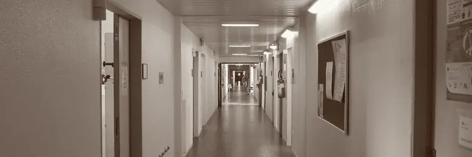
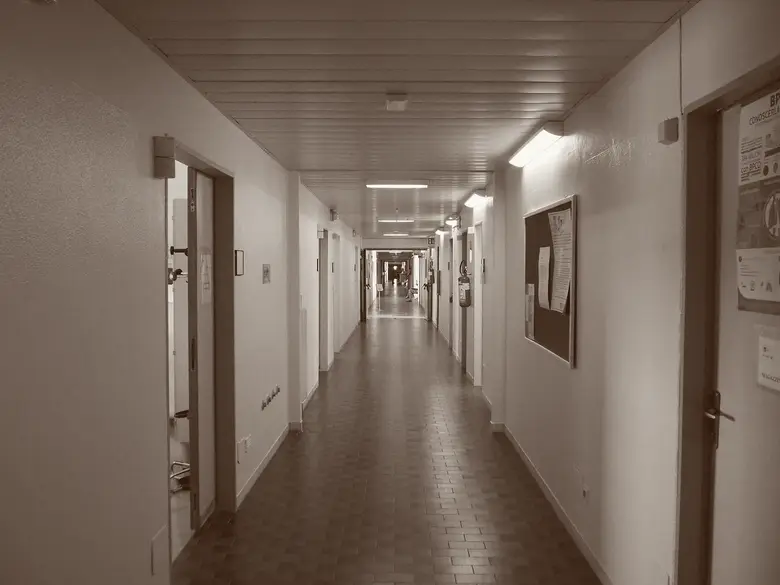
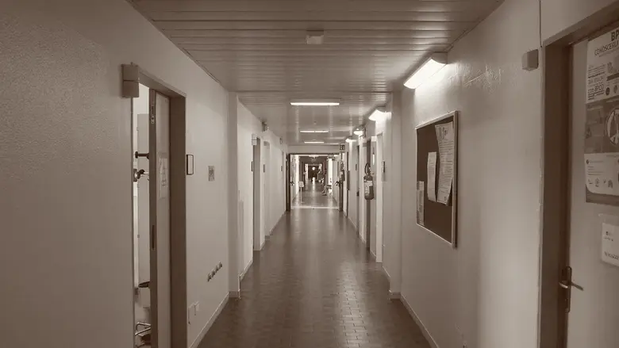
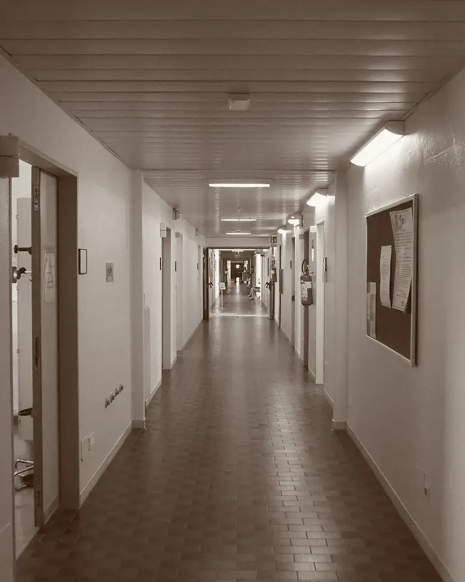
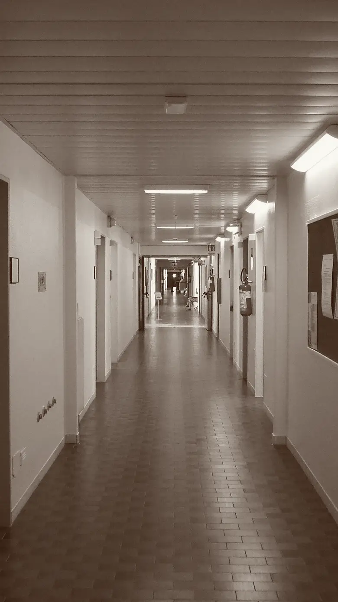

Sanità
Servizio sanitario nazionale, accesso alle cure e personale sanitario.
Tema 4 di 12 · partiti in ordine alfabetico · prototipo con 3 partiti su 10

_01.jpg){kind=link}



Sanità
Foto Threecharlie · CC BY-SA 4.0 · Wikimedia Commons · duotono
Servizio sanitario nazionale, accesso alle cure e personale sanitario.
Tema 4 di 12 · partiti in ordine alfabetico · prototipo con 3 partiti su 10

Sanità
Foto Threecharlie · CC BY-SA 4.0 · Wikimedia Commons · duotono
Servizio sanitario nazionale, accesso alle cure e personale sanitario.
Tema 4 di 12 · partiti in ordine alfabetico · prototipo con 3 partiti su 10
Sanità
Servizio sanitario nazionale, accesso alle cure e personale sanitario.
Tema 4 di 12 · partiti in ordine alfabetico · prototipo con 3 partiti su 10
Foto Threecharlie · CC BY-SA 4.0 · Wikimedia Commons · duotono
Tocca un punto per leggere le parole del partito. Tocca una questione per aprirla.
-
 AVSAlleanza Verdi e Sinistra
AVSAlleanza Verdi e Sinistra40 mila assunzioni nella sanità pubblica in tre anni
Alleanza Verdi e Sinistra vuole potenziare i servizi sanitari sul territorio e assumere 40 mila operatori in tre anni, riducendo precariato ed esternalizzazioni. Propone psicologi nei servizi pubblici e di togliere i vantaggi fiscali a polizze e fondi sanitari integrativi.
Programma depositatoPartitoVerificataLeggi nel programma · 4 citazioni
Medicina territoriale
«Questo richiede la radicale riorganizzazione e il potenziamento dei servizi territoriali»
Programma AVS 2022p. 30
Personale sanitario
«Un Piano di rafforzamento strutturale del personale dipendente, con l'assunzione di complessivi 40 mila operatori in tre anni, per riportare la dotazione di operatori ai livelli precedenti alla crisi, riducendo contestualmente la spesa per il lavoro precario, le collaborazioni esterne e le esternalizzazioni di servizi.»
Programma AVS 2022p. 31
Salute mentale
«Prevedere l'assunzione straordinaria di psicologi e specialisti della salute mentale nei sistemi sanitari pubblici territoriali, convenzionati o che garantiscano un costo di prestazione calmierato»
Programma AVS 2022p. 33
Pubblico e privato convenzionato
«Abolizione dei vantaggi fiscali connessi alla sottoscrizione di polizze assicurative sanitarie e alla partecipazione a fondi sanitari integrativi, in quanto riducono la contribuzione degli assicurati al Fondo Sanitario Nazionale»
Programma AVS 2022p. 31
-
 AzioneLista comune con Italia Viva
AzioneLista comune con Italia VivaAttese massime di 60 giorni entro un anno
Azione e Italia Viva propongono un piano straordinario per portare entro un anno le attese a 60 giorni per le prestazioni programmate e a 30 per le altre. Vogliono regole nazionali per le Case della Comunità, con lo psicologo di base, e carriere più rapide e stipendi adeguati per chi lavora in sanità.
Programma depositatoLista comuneVerificataLeggi nel programma · 4 citazioni
Finanziamento del SSN e liste d'attesa
«è necessario varare un piano straordinario per aumentare la capacità produttiva di prestazioni di specialistica ambulatoriale, visite di controllo e interventi. L'obiettivo deve essere ridurre entro un anno il periodo di attesa per tali prestazioni fino ad un massimo di 60 giorni per quelle programmate e di 30 per tutte le altre.»
Programma Azione - Italia Viva 2022p. 20
Medicina territoriale e salute mentale
«occorre adottare indicazioni nazionali prescrittive sulla funzione delle Case della Comunità, che siano proiettate all'esterno con nuove professionalità come ad es. lo Psicologo di Base e con personale presente con un medesimo sistema di guardia notturna e stesso emolumento dei medici ospedalieri.»
Programma Azione - Italia Viva 2022p. 19
Personale sanitario
«Proponiamo di valutare una più rapida ascesa di carriera in campo sanitario e una remunerazione adeguata al carico di lavoro e soprattutto alle responsabilità così da limitare contestualmente il fenomeno dell'emigrazione di professionisti sanitari verso l'estero.»
Programma Azione - Italia Viva 2022p. 20
Pubblico e privato convenzionato
«È necessario istituire modalità più trasparenti nel differenziare servizi pubblici e privati in modo che questi possano collaborare in sinergia e integrarsi tra loro.»
Programma Azione - Italia Viva 2022p. 19
-
Esempio fittizioPartito inventato per mostrare l'assenza
Il programma non tratta la sanità
Nelle 24 pagine del programma depositato non c'è nessuna proposta su questo tema. Non è un giudizio: è quello che il documento dice, o non dice.
Programma depositatoPartitoVerificataControlla tu: apri il programma -
 M5SMovimento 5 Stelle
M5SMovimento 5 StelleLa sanità torni allo Stato, non alle Regioni
Il Movimento 5 Stelle propone di cambiare la Costituzione per riportare la sanità sotto la gestione diretta dello Stato, togliendola ai 20 sistemi regionali. Chiede stipendi più alti per il personale sanitario, incentivi ai pronto soccorso e accesso più facile alle terapie innovative.
Programma depositatoPartitoVerificataLeggi nel programma · 4 citazioni
Governo della sanità (fuori dalle sotto-questioni)
«RIFORMA TITOLO V DELLA COSTITUZIONE PER RIPORTARE LA SALUTE ALLA GESTIONE DIRETTA DELLO STATO ed evitare le attuali disfunzioni dei 20 sistemi regionali, a maggior ragione emerse con la pandemia»
Programma M5S 2022p. 6
Accesso alle terapie (fuori dalle sotto-questioni)
«POTENZIAMENTO E ACCESSIBILITÀ ALLE TERAPIE INNOVATIVE E AVANZATE»
Programma M5S 2022p. 6